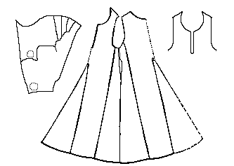

Pattern drawing based on N�rlundThis garment is assumed to have been a man's because it was found with a hood, the length of the overall outfit is not very long compared to the sleeve length, and the skirt is not very full compared to the body.
It was not a carefuly, or well made garment. It is cut in front- and back-pieces, each with 2 center center and side gores. The waist is 92 cm (36.2") in circumference, the bottom hem is 230 cm (90.6"). The armhole is 58 cm (22.8") around. The neck opening is 79 cm (31") around, and there is an "keyhole neckline" opening that is cut to 18 cm (7.1") (as there is no sign of lacing eyelets or buttonholes, it may be presumed that it was kept closed by a clasp.
Unlike the majority of these outfits, the center gores are not joined together in one point, but sewn up in two separate points.
The pocket slits are places much higher up and further back than is usual, only 7 cm (2.8") below the bottom of the arm holes, and in the center of the gore.
There are clear signs of wear showing that this outfit was worn with a belt.
The lower edge, and the pocket slits were not hemmed. The sleeve ends, and the neck opening were turned under, but there is no sign that they were stitched or overcast.
The fabric is a "fourshaft" weave, thin, with a dark-brown warp and a light-brown weft.
Go to Tunic Page; Herjolsnes Site Page
Some Clothing of the Middle Ages -- Tunics -- Herjolfsnes 43, by I. Marc Carlson, Copyright 1997 This code is given for the free exchange of information, provided the Author's Name is included in all future revisions, and no money change hands-